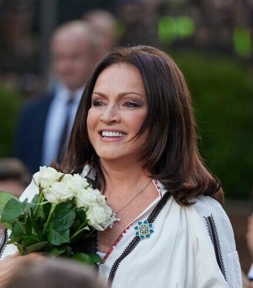
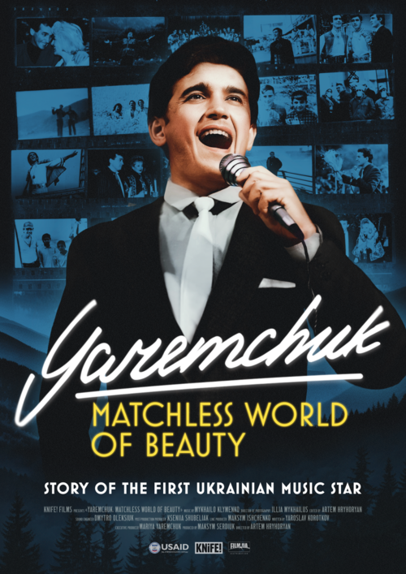
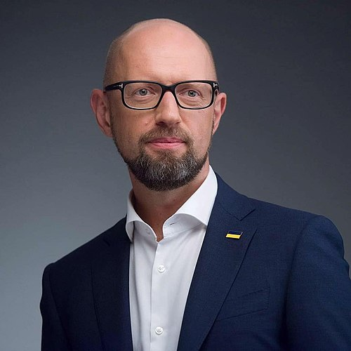
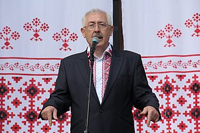

Сьогодні
вівторок, 9 грудня 2025 р.
Відділ комунікацій та брендингу Чернівецького національного університету імені Юрія Федьковича продовжує серію інтерв'ю, де розповідатиме про знакові події, досягнення та ініціативи університетської спільноти. Цього разу гостем став кандидат педагогічних наук, доцент, завідувач кафедри теорії та методики фізичної культури Іван Васкан, який поділився своїм професійним шляхом, діяльністю команди "Воллейбук" та іншими досягненнями.
- Добрий день, ми раді вас вітати у рубриці «За лаштунками науки і освіти». Розпочнімо з Вашого професійного шляху. Як Ви прийшли до сфери фізичної культури і що надихає Вас у цій діяльності?
- Мій шлях у сферу фізичної культури розпочався ще зі шкільних років. Я завжди із задоволенням відвідував уроки фізичної культури та брав активну участь у різних видах спорту - від волейболу й футболу до легкої атлетики. Саме це раннє захоплення руховою активністю сформувало мій інтерес до спортивної сфери та стало першим поштовхом до майбутньої професії. У 2000 році я вирішив поглибити свої знання та вступив на педагогічний факультет за спеціальністю «Фізична культура». Під час навчання я вже почав працювати у школі, проводив позакласну роботу та вів секцію волейболу в ЗОШ №16. Це був надзвичайно важливий досвід, який навчив мене відповідальності, взаємодії з дітьми та показав, наскільки цінною може бути роль учителя у розвитку молоді. Отримавши ступінь бакалавра, я продовжив навчання й у 2004-2005 навчальному році здобув ступінь магістра за спеціальністю «Фізична культура». Що мене надихає й досі? Передусім - можливість формувати у дітей і молоді любов до руху, здорового способу життя та спорту. Мене мотивує бачити, як рухова активність допомагає учням ставати впевненішими, сильнішими й дисциплінованішими. Це дає відчуття, що моя робота має реальний вплив і приносить користь суспільству.
- Ми знаємо, що Ви президент Чернівецької обласної федерації волейболу. Які проєкти та ініціативи реалізує ця федерація для розвитку волейболу в регіоні?
- Тут варто почати з того, що Федерація волейболу Чернівецької області - одна з найактивніших громадських спортивних організацій регіону. Вона є офіційним осередком Федерації волейболу України та має багаторічні традиції розвитку цього виду спорту. У 2015 році Федерація була заснована. Ініціатором заснування був я, а до групи засновників також увійшли: Тесліцький Юрій, Раца Петро, Пилипко Валерій. Ще до заснування Федерації мною було ініційовано ряд заходів, пов’язаних із організацією волейбольних змагань - Буковинська волейбольна ліга для жіночих, чоловічих та ветеранських команд. З 2015 року ми системно організовуємо чемпіонати та кубки Чернівецької області серед чоловічих, жіночих, дитячих і ветеранських команд. Особливий акцент робимо на розвитку дитячо-юнацького волейболу, адже саме молодь є тим фундаментом, який здатен забезпечити сильне майбутнє виду спорту в регіоні. Сьогодні маємо вагомий результат: чернівецькі команди активно представлені у Чемпіонаті України - це 3 чоловічі, 4 жіночі, 3 команди юнаків та 7 команд дівчат у трьох вікових категоріях. У літній період ми розвиваємо ще два напрямки - пляжний волейбол та парковий волейбол формату 4×4. Ці проєкти щороку дають можливість популяризувати волейбол серед ще ширшої аудиторії. Усі наші ініціативи спрямовані на одне - створити умови, де волейбол на Буковині розвивається системно, стабільно й з перспективою на майбутнє.
- Що Ви можете сказати про підтримку тренерів і спортсменів від Федерації?
- Ми всебічно підтримуємо ініціативи тренерів і спортсменів, однак як неприбуткова громадська організація переважно виконуємо дорадчу та організаційну функції. Наша роль - створити умови, у яких спортсмени та тренери можуть розвиватися, зростати та реалізовувати свої потенціали. Федерація забезпечує підготовку суддів для проведення змагань, розробляє методичні рекомендації, надає консультації та допомагає організовувати комунікацію з державними структурами. Ми також активно працюємо над залученням меценатів і спонсорів, які підтримують окремі проєкти, команди або спортивні заходи. При федерації діє школа арбітрів, що дозволяє формувати якісний суддівський склад у регіоні. Гордість нашої федерації - це спортсмени, які наразі успішно виступають у командах Вищої та Першої ліг Чемпіонату України. Більше того, маємо представників і в збірних країни. Зокрема: - Рязанов Артем, Челеняк Іван, Челеняк Андрій (тренер Сеницький С.М.) - гравці національної збірної України; - Статнік Дарина (тренер Грінько С.О.) - збірна України U18; - Лабунська Олександра (тренер Григоришина Т.Б.), Самойленко Леля, Якобчук Вікторія (тренер Накоскіна Л.І.) - збірна U16. Ці успіхи - результат щоденної праці тренерів, амбітності спортсменів і системної підтримки, яку намагаємося забезпечити на всіх рівнях.
- З якими викликами стикаєтесь при роботі з молоддю?
- Працюючи з молоддю, я переконаний, що головний виклик для будь-якого досвідченого викладача, тренера - це відповідати вимогам часу й розуміти сучасне покоління студентів. Адже сьогоднішня молодь суттєво відрізняється від тієї, з якою доводилося працювати або навчатися у мої студентські роки. Основні труднощі проявляються насамперед у спілкуванні та взаємодії. Але я переконаний, що якщо прагнути зрозуміти спосіб мислення, мотивацію та потреби студентів, то більшість викликів долаються природно. Більше того - спілкування з молоддю дає можливість залишатися з ними «на одній хвилі», краще відчувати сучасні тенденції та не втрачати зв’язок із динамічним світом, у якому вони живуть. Тому ключем до успіху є взаємна повага, гнучкість, відкритість до діалогу та готовність адаптуватися. Коли викладач, тренер і студенти розуміють один одного - навчально-тренувальний процес стає набагато ефективнішим і результативнішим.
- Повернімося до жіночого волейболу. Як змінилася за останні 10 років популярність жіночого волейболу в нашому регіоні?
- У нашому регіоні жіночий волейбол завжди мав глибокі й потужні традиції, але за останні 10 років його популярність помітно зросла. Сьогодні Буковина може пишатися одразу трьома активними волейбольними клубами, які розвивають жіночий волейбол на різних рівнях. По-перше, клуб «Буковинка» представлений у найвищому дивізіоні та є чемпіоном Суперліги Чемпіонату України. По-друге, «Воллейбук-ЧНУ» - команда, яка нині виступає у Вищій та Першій лігах і стабільно демонструє високі результати. По-третє, клуб «Ейс+» працює з дітьми і успішно представляє регіон у дитячій лізі, що є основою для розвитку майбутнього покоління спортсменок. Хочу окремо зазначити, що жіночий волейбол є видовищним та емоційним видом спорту. Саме ця емоційність, динамічність та яскравість гри приваблює все більше вболівальників, а разом з тим - мотивує дівчат долучатися до занять. У результаті ми спостерігаємо стабільне зростання кількості команд, спортсменок та зацікавленої аудиторії. Сьогодні жіночий волейбол на Буковині - це повноцінний та активно розвиваний напрям, який демонструє серйозний спортивний прогрес.
- Які цілі Ви ставите перед командою «Воллейбук»?
- Перед командою «Воллейбук» ми завжди ставимо максимально амбітні цілі. Звісно, ми реалістично оцінюємо можливості кожного сезону, адже склад команди, рівень суперників та інші фактори можуть змінюватися. Проте наш орієнтир незмінний - рух уперед, прагнення до призових місць і постійне зростання рівня гри. У минулому році у складі команди грала майстер спорту з волейболу Тетяна Ротар, асистентка кафедри теорії та методики фізичної культури. Її досвід та професіоналізм дали нам вагоме підсилення й допомогли досягти високих результатів. Цей сезон ми розпочали дещо складніше, але продовжуємо системну роботу: коригуємо тренувальний процес, аналізуємо кожну гру та вдосконалюємо індивідуальну підготовку волейболісток. Наші спортсменки працюють із величезною самовіддачею - інколи проводять по два тренування на день. Уявіть собі: студентка другого курсу юридичного факультету, яка після лекцій відпрацьовує два повноцінні тренування щодня - це справжня відданість справі та любов до волейболу. Тому наша головна мета - продовжувати будувати конкурентоспроможну команду, яка стабільно демонструватиме високий рівень у Вищій лізі та гідно представлятиме університет і регіон на всеукраїнській арені.
- Скільки займає часу тренування?
- Одне тренування у нашої команди триває півтори-дві години. Але варто розуміти, що для спортсменок це не кінець дня - після тренування їм потрібно привести себе до ладу, відновитися й продовжувати навчальний процес. І таких студенток у нас багато, причому велика частина із них навчаються за різними освітніми програмами. Попри це ми ставимо перед командою найвищі вимоги. Наша поточна ціль - увійти до символічної вісімки команд, які продовжать боротьбу у другому етапі чемпіонату України. У Вищій лізі цього сезону бере участь тринадцять команд, і саме з них формується вісімка найсильніших, а вже потім - четвірка, яка визначить переможця чемпіонату. Тому кожне тренування, кожна гра і навіть кожна дрібниця зараз мають величезне значення.
- Заключне питання: що для вас успіх у тренерській кар'єрі і в спортивній діяльності загалом?
- Для мене успіх у тренерській кар’єрі та спортивній діяльності загалом - це можливість бути поруч із молоддю, працювати в її середовищі й залишатися в ритмі сучасності. Я отримую справжнє задоволення від живого спілкування, обміну думками та енергією. Вважаю своїм завданням - підтримувати молоде покоління, яке потребує знань, порад, навичок і професійного супроводу. Саме ця взаємодія, можливість бачити, як молоді люди зростають, розвиваються та досягають своїх цілей, і є для мене найбільшою мірою проявом успіху.
- До речі, щодо спонсорів: чи налагоджена у Вас співпраця з міжнародними організаціями, партнерами?
- Щодо співпраці зі спонсорами та міжнародними партнерами, то певна взаємодія в нас дійсно є, однак наразі вона переважно реалізується на місцевому рівні. Повноцінних міжнародних партнерських програм чи спільних проєктів поки що не налагоджено. На світовій арені Федерація волейболу Чернівецької області представлена передусім через успішні виступи наших спортсменів. Представники буковинського волейболу грають за іноземні клуби, беруть участь у чемпіонатах Європи та світу, зокрема й у ветеранських категоріях. Цього року, наприклад, волейбольний клуб «Нива» виступив на чемпіонаті світу у віковій категорії 45+. Активно розвивається й участь наших дитячих команд у міжнародних турнірах. Зокрема, команда «Ейс+» виборола перше місце у категорії дівчат 2010 року народження та третє місце серед дівчат 2012 року на чемпіонаті східноєвропейських країн. Попри те, що Чернівецька область є найменшою в Україні й має відносно невелику кількість населення, наші волейбольні традиції та співпраця з Федерацією залишаються потужними. Це дозволяє нам підтримувати високий рівень розвитку волейболу та бути помітними навіть на міжнародній спортивній карті.
- Ви є тренером команди «Воллейбук». Яка історія створення цієї команди?
- Історія створення волейбольної команди «Воллейбук» Чернівецького національного університету імені Юрія Федьковича тісно пов’язана з розвитком студентського спорту та необхідністю забезпечити якісну тренувальну й змагальну діяльність для студенток університету. Команда є жіночою збірною ЧНУ, і її витоки сягають 2005-2006 років - саме тоді, коли я розпочав викладацьку діяльність і був призначений головним тренером жіночої команди. Протягом років команда проходила кілька етапів розвитку. До 2015 року ми виступали як збірна ЧНУ, після чого стали другою командою клубу «Буковинка» під назвою «Буковинка-ЧНУ-2». Новий етап почався у 2018 році, коли ми офіційно зареєстрували власний клуб «Воллейбук» - скорочено від «волейбольна Буковина» (хоча студенти жартома пов’язують назву й зі словом «book» - книжка). Президентом клубу є Вячеслав Цуркан. Команда впевнено заявила про себе на всеукраїнському рівні. У 2019 році «Воллейбук» виборов 3-тє місце у Першій лізі чемпіонату України, а вже у 2021 році став її чемпіоном, що дало можливість перейти до Вищої ліги. У сезоні 2024–2025 років команда показала стабільно високий результат і посіла 4-те місце серед 14 команд у вищому дивізіоні. Окремо варто відзначити й успіхи на студентській арені: «Воллейбук» є п’ятиразовим фіналістом Всеукраїнської універсіади. Це свідчить про системну роботу, сталі традиції та високий рівень підготовки команди. Такі ключові віхи та особливості розвитку жіночої волейбольної команди «Воллейбук» - команди, яка гідно представляє і Чернівецьку область, і Чернівецький національний університет імені Юрія Федьковича на всеукраїнському рівні.
Інтерв'ю брали фахівчиня відділу комунікацій та брендингу Вікторія Горобець та інформагентка відділу Анна Опанасюк.Галерея

Факти з історій
Університет ім. Юрія Федьковича в Чернівцях був заснований в 1875 році указом австрійського імператора Франца-Йосифа, він входить в десятку найстаріших вищих учбових закладів України (на 7-му місці). А ще, він єдиний, що включений до Списку всесвітньої спадщини ЮНЕСКО за красу архітектурної композиції і благоустрою прилеглої території. Запроектував будівлю відомий австрійський архітектор, чех за походженням, Йозеф Главка (він також побудував Віденську оперу) в якості резиденції митрополитів Буковини і Далмації, а крило відвели для теологічного факультету. Будівництво продовжувалось з 1864 по 1882 рік, пише chernivtsi.one. Навколо цього учбового закладу за його довгу історію відбулося багато захоплюючих подій, про які ми розповімо в цього короткому, але дуже цікавому огляді. До речі, останні 20 років ЧНУ називають національним Хогвартсом за схожість з середньовічним замком із фільму.
Для будівництва в місті спеціально побудували два цегельні та черепичний заводи. Кожну цеглину перевіряли на міцніть, скидуючи її з висоти 10 м. Майстер, який робив кладку, мав право в день поставити тільки 100 цеглин. А в цементний розчин додавали курячі яйця і зіпсоване м’ясо, що надавало йому в’язкості. Також була відкрита майстерня різців по унікальному кораловому каменю, який зустрічається тільки на Буковині. В деяких залах стіни декоровані справжнім китайським шовком, привезеним на замовлення. За сотні років він не вицвів. Черепицю виготовляли 5-х кольорів, на дахах викладені чудові буковинські орнаменти.
Цікава історія про те, як будували доріжки з бруківки. Камені возили з заводу в Австрії, майстри їх гарно викладали, а потом кликали гуцулів і вони від музику танцювали по декілька днів, щоби утрамбувати покриття. За це сільським чоловікам добре платили. За 148 років існування університет кілька разів перейменовували:
- з 1875 по 1918 рік він носив ім’я Франца Йосифа;
- на два роки, з 1918 по 1920 рік він став Університетом імені короля Фердинанда І;
- до 1933 року його називали Університет короля Карла I в Чернівцях, румунською мовою Universitatea Regele
Carol I din Cernăuţi;
- з 1933 по 1940 ВУЗ знову був перейменований — в Чернівецький державний університет;
- в 1989 році закладу було присвоєно ім’я українського письменника, уродженця міста Путила Чернівецької
області, Юрія Федьковича;
- уже в роки незалежної України, в 2000 році університет отримав статус національного і став носити свою
теперішню назву.
В 19 столітті за право називатися університетським містом Чернівці обійшли такі міста як Прага, Брно, Зальцбург і Трієст. В центрі на шпилі є великий сніжинкоподібний хрест, що символізує єдність християнських віросповідань — православним християнам він вказує на схід, а католикам на захід. Під університетом є ціла галерея катакомб, які тягнуться аж до залізничного вокзалу. Побудовані вони по принципу тунелю метро, стіни і стеля укріплені бетонними ребрами.
В радянські часи в церкві Трьох Святителів розташували комп’ютерний центр — там стояла гігантська електронно-обчислювальна машина. Розписи на стінах виконав відомий в ті часи австрійський художник Карл Йобст.
Чернівецький університет вважається туристичним об’єктом, там проводять групові екскурсії. Щороку його відвідує близько 100 тисяч туристів. В дендропарку на території ростуть декілька тисяч рослин і дерев, привезених з усього світу. Тут є тюльпанове дерево, яблуня з трьома стовбурами і бук, вік якого не менше 130 років. Бути садівником в парку вважається дуже престижно, на цю посаду беруть тільки людину з вищою освітою.
В 1911 році в університеті відбулася справжнісінька дуель. Професор політичної економії викликав до бар’єру бібліотекаря, який не хотів видавати рідкісні книжки студентам. Профессор поранив свого опонента, а той не влучив і тому змушений був поступитися. В 1944 році в приміщенні сталася велика пожежа, згоріла Синодальна зала і бібліотека стародруків. Після закінчення війни залу відреставрували, аде вже не справжнім мармуром і кришталем, а імітацією.
В Червоній залі є величезні венеціанські дзеркала, для виготовлення яких на дуже цінне муранське скло нанесли 5 шарів срібла. По легенді, якщо жінка гляне в таке люстро, то помолодішає, тому там постійно крутяться дівчата. В університеті існують два табу. На його території категорично заборонено палити. А на центральну гравійну доріжку не можна ступати, бо під нею є дренажна система, яка відводить воду від фундаменту. Це правило порушується тільки один раз на рік — 1 вересня пройти по доріжці дозволяється першокурсникам.
І до речі, саме на цій доріжці в 19 столітті стояла міська шибениця, можливо й тому її стараються обходити стороною. Позаду резиденціі є невеликий затишний парк. Раніше там був 9-метровий колодязь з мінеральною водою, але він вже пересох. По территорії ходили косулі і павичі, лякаючи перехожих своїми дикими криками. Тепер в парку живуть білочки і величезна, дуже стара сова. Університет в Чернівцях вважається більш красивим, ніж французька Сорбонна.
Визначні вчені
1. Гутів Василь Володимирович
2. Дідух Віталія Віталіївна
3. Зигар Андрій Володимирович
4. Байталюк Зоряна Володимирівна
5. Караван Володимир Васильович
6. Бзова Лаура Георгіївна
Відомі випускники
1. Софія Ротару

2. Назарій Яремчук

3. Іван Миколайчук

4. Арсеній Яценюк

5. Олександр Фищук

6. Ольга Кобевко

7. Максим Степанов

8. Юрій Федькович

9. Дмитро Добродомов

Я планую навчатися
Я давно замислююся над тим, де хотів би продовжити свою освіту після школи, і все більше схиляюся до думки, що хочу вступити до Чернівецького Національного Університету.
Для мене важливо отримати якісні знання та вчитися у викладачів, які справді знають свою справу. ЧНУ саме такий заклад — там є сильні факультети, можливості для розвитку й участі в різних проєктах. Я хоч і розумію, що навчання буде непростим, але впевнений, що воно того варте.